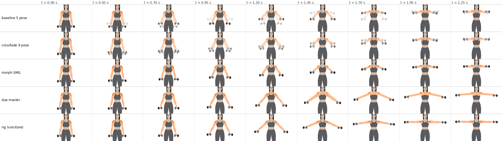
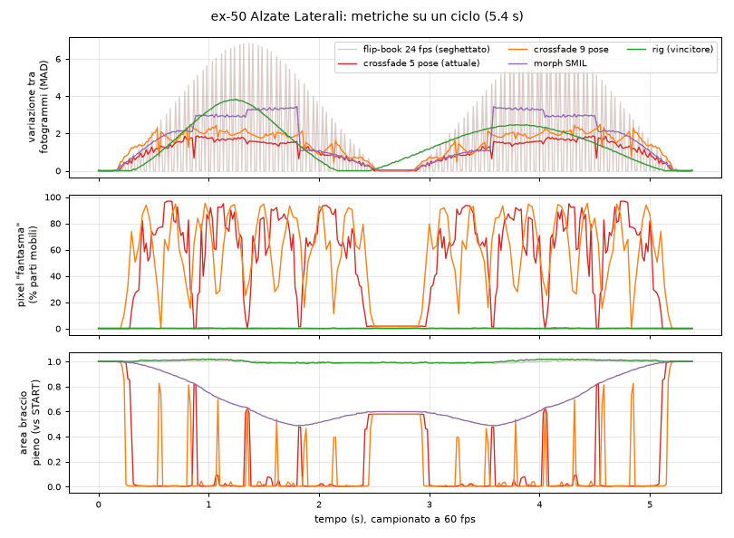
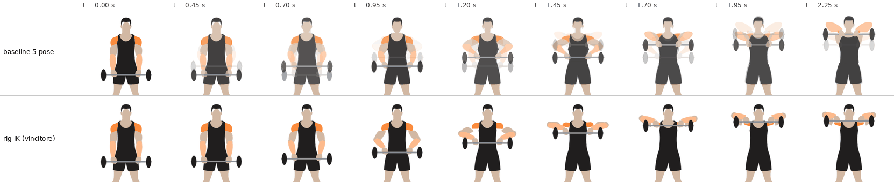
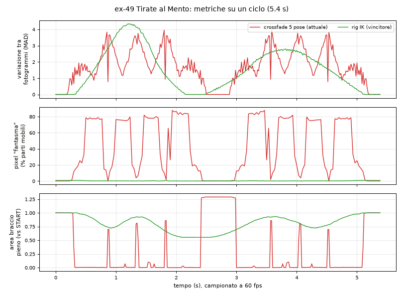

Animazioni fluide: confronto delle tecniche
Prototipi R&D costruiti sulle immagini attuali di ex-50 (Alzate Laterali) ed ex-49 (Tirate al Mento). I disegni sono piccoli e compressi: conta il confronto relativo. I numeri vengono da render deterministici a 60 fps in Chromium (dettagli in docs/ricerca-animazione-fluida.md).
ex-50 Alzate Laterali


ex-49 Tirate al Mento


Tabella delle misure
| Prototipo | KB | Fantasmi medi | Fantasmi p95 | Indice di scatto | Salto max | Braccio pieno | CPU ms/s |
|---|
Fantasmi: quota dei pixel interni alle parti mobili con un colore che non esiste nelle pose pulite (mescolato), esclusi i bordi antialias. Indice di scatto: media di |variazione della differenza tra fotogrammi| divisa per la differenza media (0.02 = moto continuo). Salto max: il peggior cambio improvviso (oltre 0.5 = scatto visibile). CPU: tempo del thread principale per secondo di animazione con CPU rallentata 6x, immagine come <img> 360x198 px a DPR 3.